每日详细行程
点日期跳转，点卡片展开详情
🕐 15:00 — 抵达浦东机场（T2）
国际航班建议提前 2 小时到机场值机。三人从各自位置出发，约好 15:00 在值机柜台集合。值机只需要护照，行程单、酒店预订单用不上（有电子版存手机里备用即可）。值机+托运+安检+出境，从容走完留 40 分钟逛免税店。
🕐 17:00 — 起飞 ✈️
航班起飞，飞行约 4.5 小时。机上吃顿航餐、补个觉。⚠️ 落地已是泰国晚上，别熬太狠。
🕐 20:30 — 落地曼谷素万那普（BKK）
落地后：① 过边检（免签，护照 + 电子入境卡即可）——电子入境卡（TDAC）务必在值机前就提前填好（官网或购票平台如飞猪买票后的快捷入口），不要等落地再弄 ② 取行李 ③ 激活泰国电话卡（提前淘宝买的 Happy/AIS 卡，插卡即用）④ 换一点泰铢现钞（机场汇率一般，但如果之前没换，尽量在机场先换 1000-2000 泰铢应急——有些费用只收现金，支付宝/微信覆盖不到，比如打车给小费、路边摊、部分景点票）。全程约 40-60 分钟。

🕐 21:00-21:30 — 前往酒店
三位男生+行李，直接 Grab 叫车直达酒店。✅ 机场有专门的 Grab 上车分区，跟着机场指示牌走就行，到对应分区位置等车，整个过程和国内用滴滴一模一样，很好上手。目的地：Grande Centre Point Ratchadamri。
🕐 22:00 — 入住 + 酒店周边吃宵夜
办入住、放行李、简单洗漱。酒店就在 CentralWorld/四面佛旁边，楼下走几步就有夜市摊和小吃。✅ 实测选摊技巧：先走一圈，挑人比较多的那家路边摊坐，提前看菜单标价再点，性价比一般不差。落地第一顿吃点清淡的——泰式米粉汤、烤串，配杯泰式奶茶，别一上来就搞重口。吃完早点休息，明天正式开始。
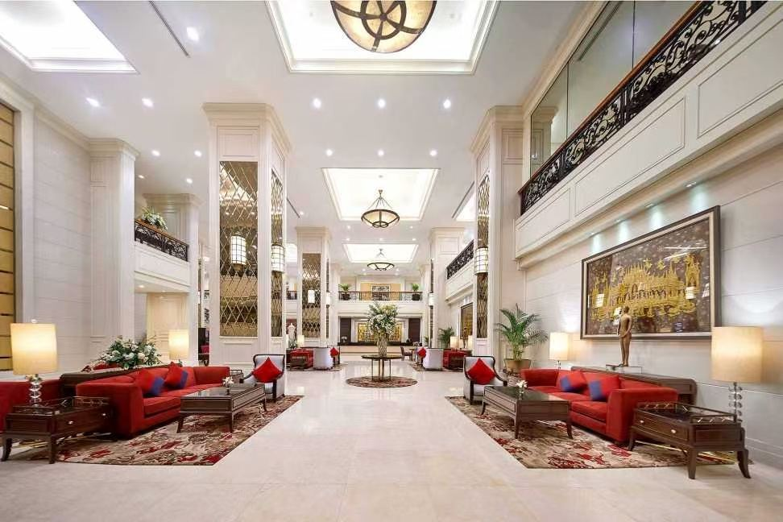
🕐 07:00 — 起床 + 早餐
⚠️ 酒店不含早餐。✅ 实测最优解：直接楼下 7-Eleven 解决——三明治、饭团、烤肠、豆浆咖啡，又快又便宜又扛饿，别专程跑去吃推荐的网红早餐店了（要走路还要排队）。
起床时间不用卡那么早，自己按当天节奏规划即可，睡够再出门，大皇宫逛起来也从容。出门前涂防晒，穿长裤/过膝裙+有袖上衣（进大皇宫硬性要求）。
🕐 08:00 — 出发去大皇宫
Grab 打车到大皇宫（约 120-150 泰铢），直接定位到下客区，下车后步行到售票口。
🕐 08:30-10:30 — 大皇宫 + 玉佛寺（约 2 小时）
曼谷头号地标，门票 500 泰铢。玉佛寺金碧辉煌，跟着人流走主线，重点看玉佛殿和节基殿。⚠️ 别碰僧侣、别用脚指佛像。
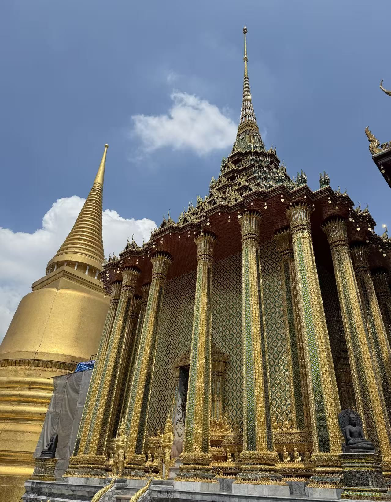
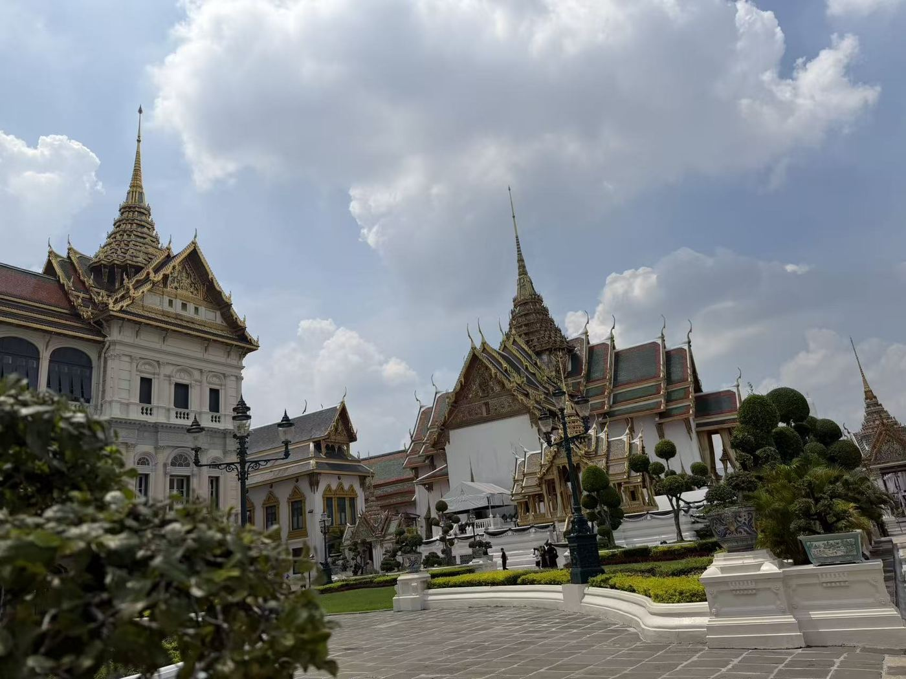
🕐 10:30-11:30 — 卧佛寺（步行 8 分钟）
从大皇宫出来步行约 8 分钟到卧佛寺（门票 200 泰铢），看 46 米巨型卧佛，脚底板镶满珍珠母贝。
🕐 11:30-12:00 — 轮渡到郑王庙
从卧佛寺步行 3 分钟到 Tha Tian 码头，5 泰铢渡轮横跨湄南河到郑王庙（门票 100 泰铢）。白色塔身嵌满彩色瓷片，爬到塔身中层俯瞰河景——上午光线拍出来最干净。

🕐 12:00-13:30 — 郑王庙 + 前往 ICONSIAM
逛郑王庙约 1 小时，然后在码头坐 ICONSIAM 的免费接驳船（约 10 分钟）过河到暹罗天地。10 月正午 33°C，正好躲进空调商场避暑。
✅ 弹性备选：如果大皇宫+卧佛寺逛得太久、有点超时又饿了，可以不进郑王庙——在 Tha Tian 码头对岸拍个郑王庙照（河畔机位很出片），然后直接坐船去 ICONSIAM 吃饭，一样不耽误。
🕐 13:30-16:00 — ICONSIAM （午餐+逛街+咖啡充电）
负一楼 SookSiam 室内水上市场，全泰各地小吃汇集，有空调！泰式船面、芒果糯米饭、烤猪肉串，人均 200-300 泰铢。✅ 实测：商场很好逛，一不小心就逛到下午。逛累了可以去 % Arabica（阿拉比卡）咖啡坐坐：点杯咖啡、给手机充会儿电、刷半小时手机，非常惬意。💡 顺便把后面行程要预约的票都搞定——比如 泰拳赛（周六 RWS 世界系列赛最热门，需提前定；订不到就顺延到周三传统赛）、蒂芬妮秀等，热门场次会售罄，趁这会儿在 Klook/官网上提前买好。

🕐 15:30-16:00 — 直接出发去像素大楼（务必按时）
从 ICONSIAM 直接 Grab 去 Mahanakhon 大楼，不用回酒店休整（洗澡留到晚上）。✅ 重点：最晚 15:30 就出发——顶层露天区 18:00 清场，而 10 月曼谷日落约 18:00，中间还要排电梯、安检。想完整看到日落，就要 17:00 前站上露天层，留足排队和拍摄时间。门票 Klook 提前买约 850 泰铢/人（约 170 元），免排队。
🕐 16:00-18:00 — Mahanakhon SkyWalk 露天层（日落前必须到位）
314 米玻璃栈道悬在曼谷天际线上。✅ 正确节奏：16:00 左右到达 → 16:30 前上到 314 米露天层 → 17:00-18:00 等日落、拍够。三个人互相壮胆站上透明玻璃拍照。
① 想拍到最好的光：17:00-17:45 的黄昏金光是露天层最出片的时间，务必抓住；
② 若 16:00 才出发、排队长，很可能连黄昏都赶不上，那就只剩室内层；
③ 别把「玻璃栈道看日落」当成必达目标，把预期调整成「露天层看黄昏 + 室内层看日落」，体验反而更好。


🕐 18:00-19:30 — 晚餐 Northeast（实测推荐）
✅ 实测推荐：直接去 Northeast（大众点评必吃榜第三），难得的一家很好吃、几乎不踩坑的泰国菜餐厅。我们工作日晚上去门口也就微微排 1-2 队、高峰期等位约 15 分钟，值得等待。点菜口诀：按大众点评「推荐/点赞榜」从上往下，遇到想吃想喝的无脑点就行，基本不会错。特别推荐 大西瓜冰沙——又冰爽又好看，拍照和口感都拉满。

🕐 19:30-20:30 — 回酒店 + 洗澡
吃完排档 Grab 回酒店（约 15 分钟），冲个澡、洗得干干净净——逛了一天身上黏糊糊，清爽了再去按摩才舒服。
🕐 20:30 — 酒店 SPA（实测强推）
✅ 实测：我们当天不累，就把 SPA 挪到了晚上洗完澡后，直接约了酒店自己的 SPA——虽然比外面连锁贵一些，但体验和仪式感超强：师傅每一步都会清洁、手法超级专业。✅ 强烈推荐第一次做泰式马杀鸡选 2 小时，彻底放松，做完直接回房睡觉。
⚠️ 前提说明：不是每家酒店都有 SPA——我们全程订的是五星级酒店所以都有。如果你住的酒店没有 SPA，就去外面正规连锁店（如 Health Land、Let's Relax），泰国这两家遍地都是、口碑稳定，同样能享受到专业的泰式按摩。

🕐 08:00 — 起床 + 早餐（早起点，先看大佛）
✅ 实测：今天特意早起了 1 小时，赶在恰图恰之前先去看水门寺金色大佛。酒店不含早餐，几个选择：
- 楼下速食：7-Eleven / 路边摊，打抛饭、鸡饭、豆浆油条，50-100 泰铢。
- 顺路打卡：坐 BTS 时提前一站，去中央世界/商场美食广场吃碗热汤米粉（40-80 泰铢）。
- 恰图恰市场里也有小吃可以边走边吃，留着胃。
🕐 09:00 — 出发去水门寺（金色大佛）
Grab 打车去 水门寺（Wat Paknam 大白塔寺），看金色大佛——曼谷近年爆火的新地标，64 米高金色坐佛，庄严肃穆，拍照很出片，人比大皇宫少很多。
🕐 09:30-10:30 — 水门寺看金色大佛（约 1 小时）
看完大佛，在寺里拍拍照。⚠️ 进寺庙注意着装（过膝、不露肩），保持安静。
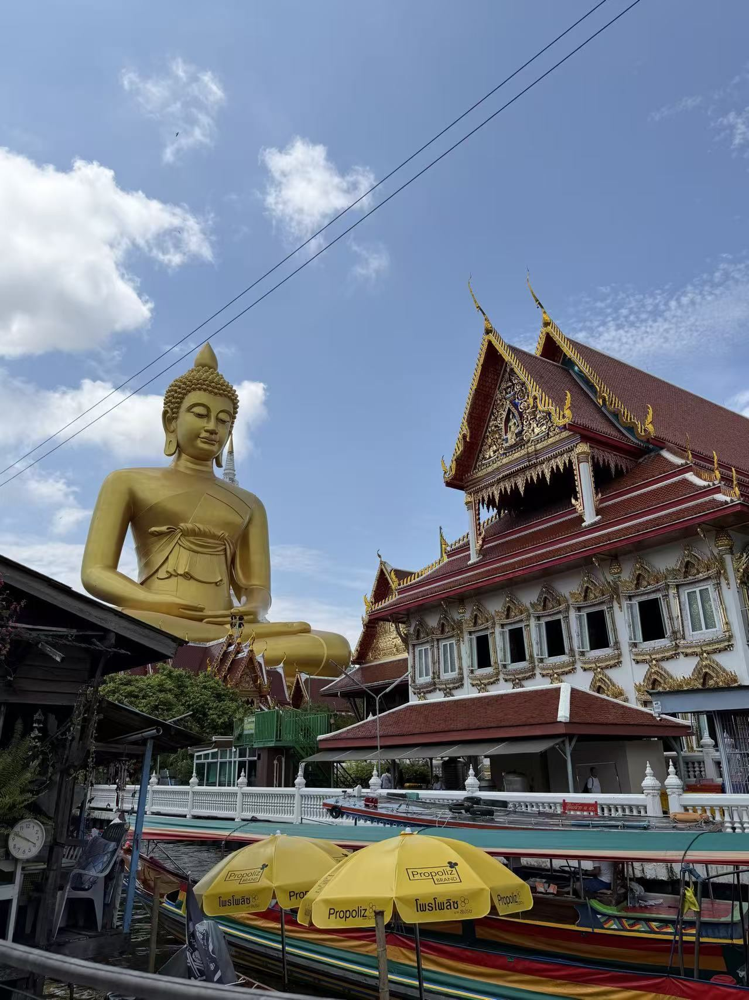
🕐 10:30 — 打车去恰图恰
水门寺出来 Grab 打车（或 BTS 转乘）去 恰图恰周末市场（Mo Chit 站一带）。今天恰逢周六——亚洲最大周末市场开市！
🕐 11:00-15:00 — 恰图恰周末市场（约 4 小时）
15000 个摊位，大到 GPS 都没用。三人分工：一人找吃、一人砍价、一人挑货。必买：泰国本土潮牌 T 恤（150-300 泰铢）、手工皮具、泰拳短裤、复古太阳镜。市场内椰子冰淇淋、烤猪肉串随走随吃。⚠️ 中午最热，逛到 15:00 收工回酒店回血。
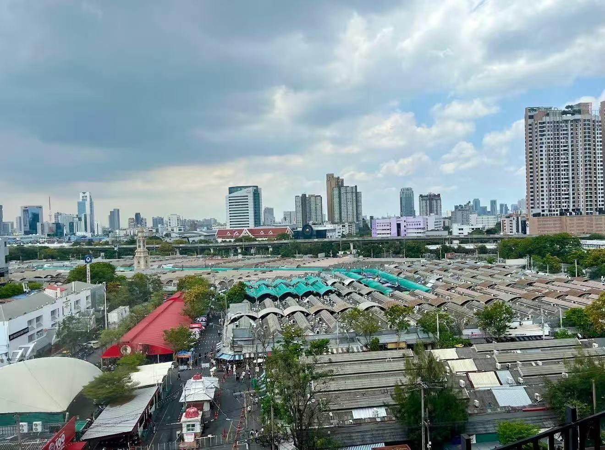
🕐 15:00-15:40 — 回酒店（BTS/Grab）
原路返回。逛完一身汗，回酒店冲澡回血。
🕐 15:40-18:00 — 酒店冲澡 + 休息（关键回血）
冲个澡、换身衣服，躺床上或泡酒店泳池半小时。这段休息是今天的关键——不休息晚上喝酒聚餐会撑不住。💡 不困想动的话，酒店就在 CentralWorld / Big C 旁边，下楼逛逛、顺手把伴手礼踩个点也不错。
🕐 18:30 — 打车出发 Saxophone，早去占靠舞台的位
✅ 实测：白天泰拳赛没订到票，就顺延到了 7 号晚上；今天正好在泰国遇到了两个朋友，约晚上一起吃饭+喝酒。🥂 鼎力推荐 Saxophone Pub & Restaurant。这家店小有名气、本地人很多，不用预约、到场现场选座；想坐靠近舞台的好位置，建议 18:00 左右就出发（我们 18:30 打车去的），早到早占位。
🕐 19:00-23:00 — Saxophone 爵士酒吧（吃饭+几轮酒）
✅ 实测：这家我们吃+喝了几轮酒，一直 high 到 23:00 才打车回酒店，氛围超棒。详见下方详细信息。
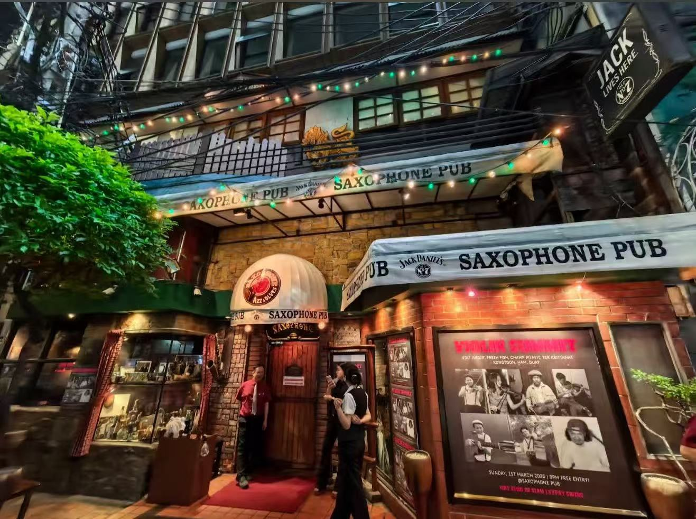
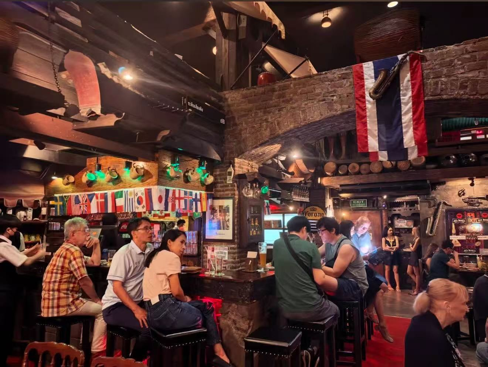
- 类型：曼谷老牌爵士/蓝调音乐酒吧，现场乐队每天演出，是听爵士 live 的经典去处
- 氛围：昏暗灯光 + 现场爵士乐，本地人和外国游客都爱来，适合和朋友边吃边喝边听歌
- 消费：有正餐也有酒水，边吃边点几轮酒，人均丰俭由人（我们几个人吃+喝了几轮，体验很好）
- 位置：近 Victory Monument（胜利纪念碑）一带，离恰图恰回城顺路
- 💡 占位技巧：不用预约，到场现场选座；店小有名气、本地人多，建议 18:00 左右早点去占靠近舞台的好位置，晚上越晚越热闹、好位置越难抢
- 💡 适合三五好友聚会的场子，比单纯的天台酒吧更有"音乐+酒+聊天"的氛围
🕐 23:00 — 打车回酒店休息
high 到 23:00 左右 Grab 打车回酒店。明天就要换城市去芭提雅了，别熬太晚。
🕐 自然醒 — 起床 + 早餐
今天换城市去芭提雅，不用早起。睡到自然醒，楼下 7-Eleven 或路边摊解决早餐。
🕐 上午 — 酒店泳池/娱乐层放松
✅ 实测关键：泰国酒店一般 15:00 才能办入住，去太早也进不了房。如果酒店不错，上午就在泳池或娱乐层放松——游游泳、玩玩 PS5 或小游戏，把时间舒服地耗掉。
🕐 11:30 — 回房收拾行李
回房间收拾、打包行李，把不用的厚衣物塞行李箱。
🕐 12:00 — 卡点退房
卡 12:00 准时退房（别太早退，也别超时被加钱）。退房后去楼下 7-Eleven 买个午饭带着路上吃。
🕐 12:30 — 打车/包车出发去芭提雅
三人包一辆车（SUV/轿车约 1500-2500 泰铢/车，3 人分摊人均约 500-850 泰铢（约 100-170 元）），门对门比大巴舒服，车上吃午饭、补觉或刷手机。
📌 包车怎么找（防坑要点）：优先 Klook/KKday 提前订（人民币直付、含高速费、有客服），或 Grab 现场叫（价锁定、最防宰）。别坐机场/路边拉客的车（开价 2-3 倍），别用突突车跑长途。上车前问清：按车不按人、含高速费、点到点接送、有无等时费。详见下方「包车与打车防坑」板块。
🕐 15:00-16:15 — 抵达 Holiday Inn Pattaya，入住 + 简单休整
✅ 车程 2 个多小时，15:00 左右到店，正好办入住。放行李、简单歇口气、补涂防晒，换个清凉装扮。
💡 酒店正对芭提雅唐人街：楼下中餐厅、美食、按摩店超多，这几天想吃中餐、换口味、或懒得跑远，下楼就有，很方便。
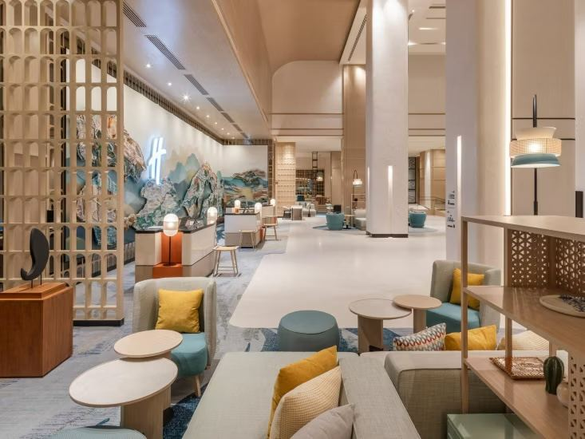
✅ 二选一（推荐 A）：
A（推荐）：今天放弃真理寺，酒店放好行李后就近去芭提雅海滩 / 酒店泳池休息 1 小时，16:30 出发去悬崖餐厅占看日落的位，从容不赶。
B：想去真理寺，那就把它挪到 Day6 上午（那天本来就是躺平日），今天彻底休闲。
（原方案「15:30-17:00 真理寺 → 17:00 出发去悬崖」确实赶不上日落，已调整。）
🕐 16:15-16:45 — 自由安排：海边散步 / 酒店泳池（备选：真理寺见上方说明）
今天不赶真理寺的话，这段就是在酒店 / 海滩缓一缓：楼下海滨路散散步、在泳池泡一下、或直接补个觉。到点出发去看日落就行。


🕐 16:30-17:00 — 前往悬崖餐厅
Grab 去 The Sky Gallery 悬崖餐厅（芭提雅最经典的看日落餐厅，位于帕塔纳克山）。建议 16:30 前出发，路上会堵，早点到占好位置、从容点单。
- 好座位（看海落日位）必须提前预约——通过 Line 官方号（lin.ee/jRQusxY）或电话预订，靠海位置很抢手。
- 只有一两个人的话，也可以早点到现场订位——但建议尽量线上联系，更稳妥。
- 定金约 1500 泰铢（约 300 元人民币），直接抵扣餐费；如果没消费完不退，点菜时尽量点够金额。
- 提前一天就能订到位置，不用太早担心。
- ⚠️ 取消政策：定金通常不可退、不可改期（临时不去 = 损失 1500 泰铢）。同一天若遇暴雨，先打电话问能否改期，别直接不去。
🕐 17:20-19:00 — 悬崖日落晚餐（约 1.5 小时）
悬崖上吃海鲜大餐看天边渐变色，人均 400-700 泰铢。10 月日落约 18:00，边吃边看完整落日过程。
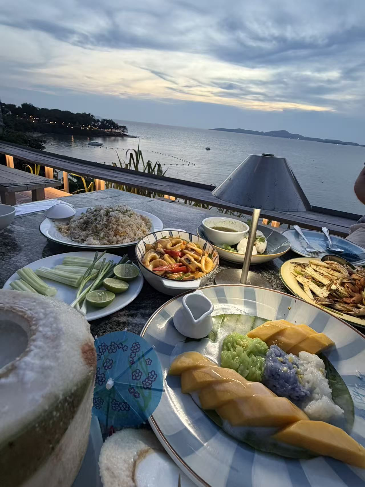
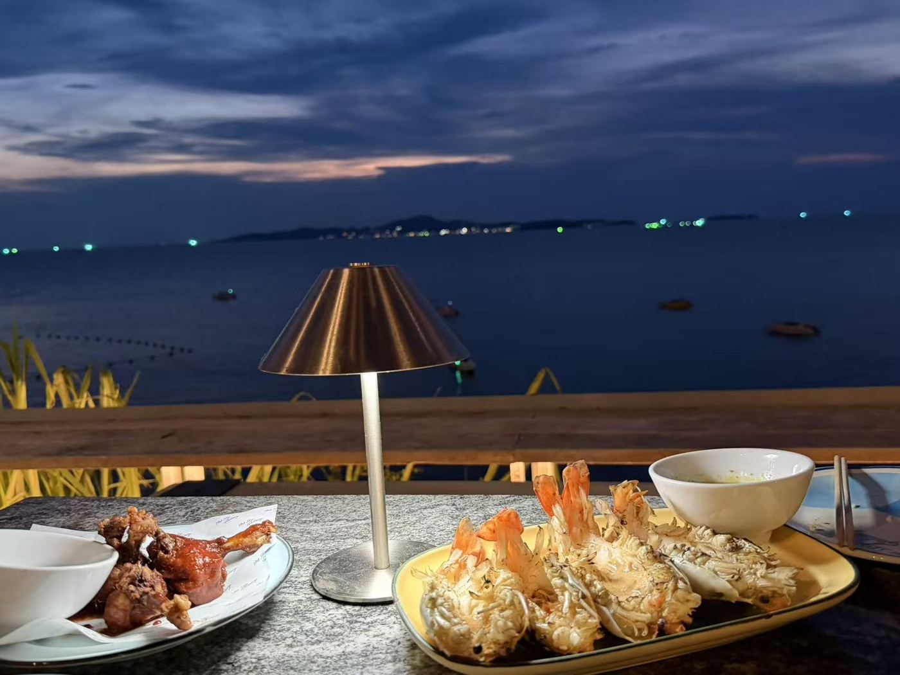
🕐 19:00-19:30 — 前往 Walking Street
Grab 去芭提雅步行街南端入口。
🕐 19:30-21:00 — 芭提雅步行街（Walking Street）【快速逛一圈即可】
✅ 实测：步行街其实不大，慢逛约 1 小时、快逛半小时左右就逛完一圈了，主要是感受霓虹和热闹氛围。⚠️ 里面的店基本都别进——感觉都挺乱的，沿街走一圈看看就够了。
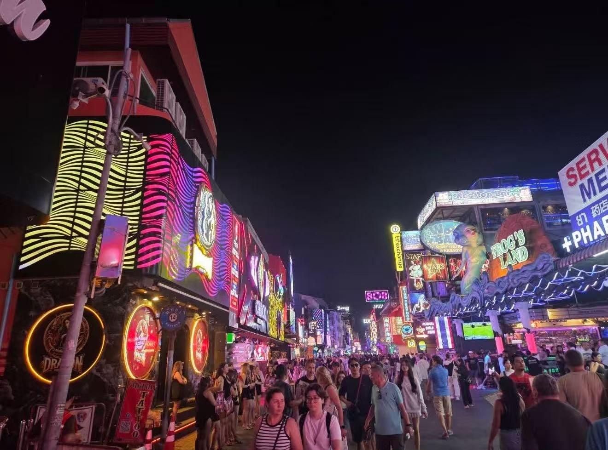
🕐 21:00 — 走回酒店看夜生活，或 Grab 回
✅ 实测：出了步行街，可以慢慢走回酒店，一路顺便看看芭提雅的海滨路夜生活；如果不想走、或酒店比较远，直接 Grab 回也完全 OK。
💡 交通建议：双条车除非固定路线，否则全程用 Grab 就行——省得讲价、也心里踏实。
🕐 21:30 — 早点回酒店休息
✅ 早点回酒店休息——明天要 7 点早起赶轮渡去格兰岛，别熬太晚。
🕐 07:30 — 起床 + 早餐
今天要去格兰岛，7 点早起。早餐直接楼下 7-Eleven 解决，又快又省事。涂好防晒（海边当天要补涂 2-3 次），带好泳裤、防水袋、相机。行李放酒店，只带随身小包。
🕐 08:15-08:45 — 前往 Bali Hai 码头
从 Holiday Inn 到 Bali Hai 码头坐双条车或 Grab。赶 09:00 的轮渡。
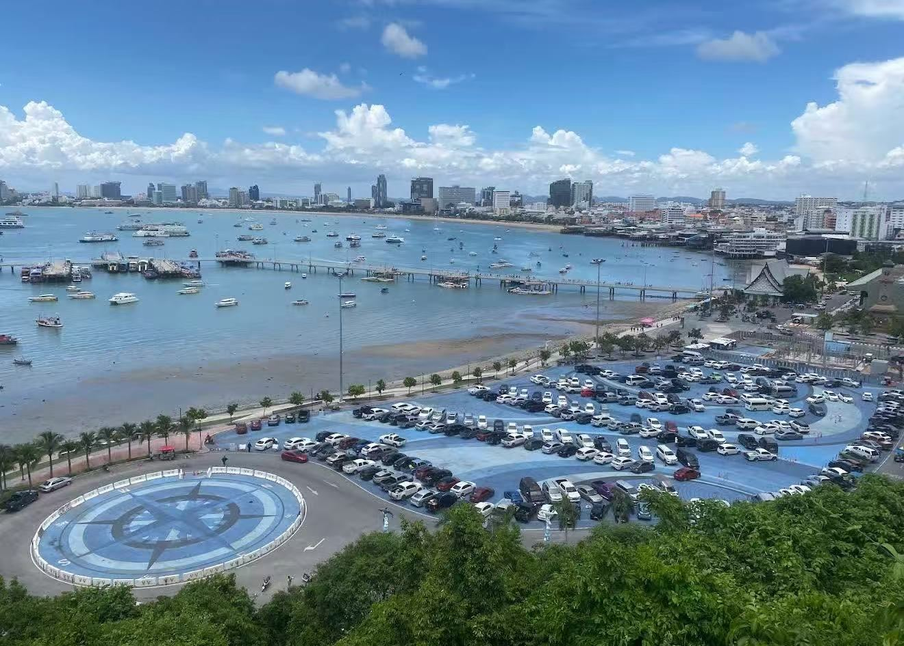
🕐 09:00-09:45 — 轮渡去格兰岛（Koh Larn）
Bali Hai 码头轮渡 40 泰铢/人，停靠 Tawaen Beach 沙滩。回程建议体验 快艇（约 150 泰铢票价，人满发船，可坐船尾看日落）。
- 想玩哪个，单独跟老板商量，别直接按牌子原价报。
- 牌子上写的价格至少能砍到 4 折——比如 4 项套票（摩托艇+拖拽伞+香蕉船+人造浮潜）标 1800 泰铢（约 360 元），可以砍到 800 泰铢。
- 套票的坑：摩托艇、拖拽伞、香蕉船单项目体验时间只有 1-2 分钟，而且摩托艇还是老板开、你坐前面，带你遛一圈就结束了，体验大打折扣。
- 实在嫌麻烦只想快速体验，再报个廉价的拖拽伞+摩托艇+香蕉船+人造浮潜套票；否则真心建议单独谈，体验完全不一样。
🕐 10:00-12:00 — Tawaen 沙滩躺平/游泳（约 2 小时）
✅ 实测：上岛后约 10 点，到 Tawaen 沙滩找个好位置每人租张椅子，躺两小时或下海游泳玩水——水很清、白沙清水很漂亮，躺到 12 点顺便补补觉。上岸就有浴室，40 泰铢洗一次澡（约 8 元）。这里也适合谈项目，但只推荐玩拖拽伞。
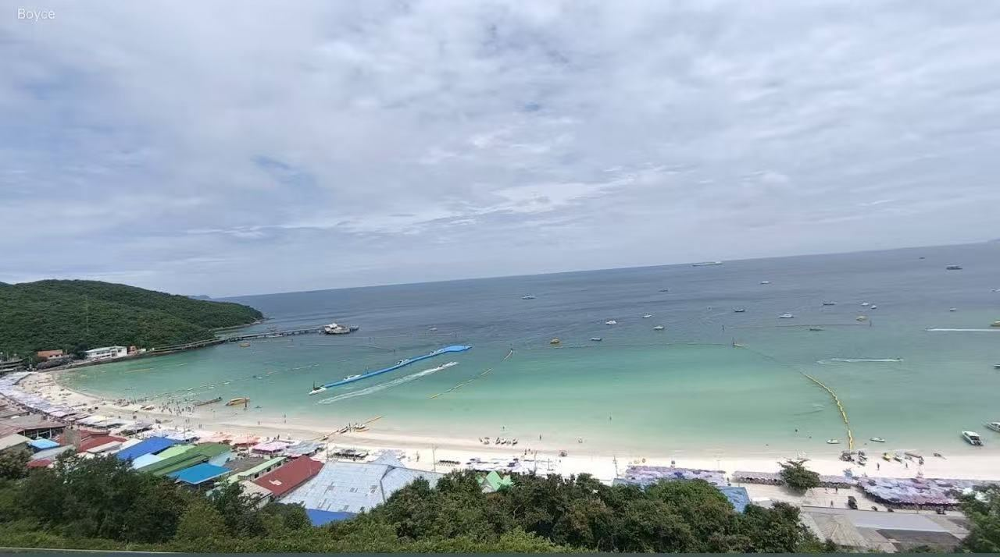
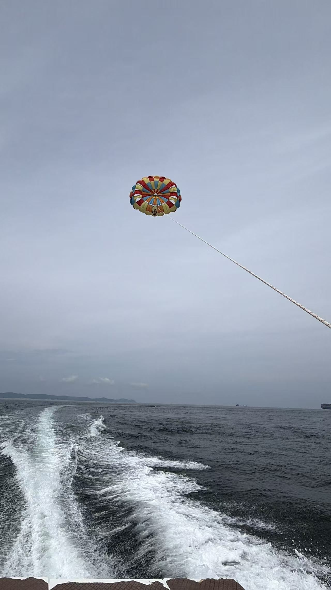
🕐 12:00-12:30 — 7-Eleven 解决中饭 + 租摩托车
✅ 实测：中饭直接在 7-Eleven 解决（岛上东西贵，7-Eleven 最省心）。然后租一辆摩托车——岛上海滩之间距离有点远，租车很方便；价格按动力和载人数不同，一台还是多台自己决定，可以跟老板谈到 5 点还车。
- 必须戴头盔——岛上主路有交警查，没戴会罚款；租车时让老板配齐，并拍照记录车身既有划痕，还车时免得被扣钱。
- 驾照问题：泰国要求国际驾照（IDP）或泰国驾照。持中国驾照骑摩托一旦出事故，保险基本不赔，还要自负赔偿。没把握就别自己骑。
- 路况：岛上有连续上下坡 + 急弯，靠左行驶（和国内相反），雨后路面滑。新手 / 不熟练千万别上。
- ✅ 更稳的替代：三个人合租一台车由最熟练的人开（慢速），或直接坐岛上的双条车/让酒店安排环岛，一样能逛完 Tien / Samae / Naul 三个沙滩，还不用担责。
🕐 12:30-14:00 — 骑摩托逛 Tien 沙滩 → Samae 沙滩
✅ 实测：先开车到 Tien 沙滩 逛逛玩玩，再去 Samae 沙滩——这两个沙滩离得近，玩到差不多 2 点。
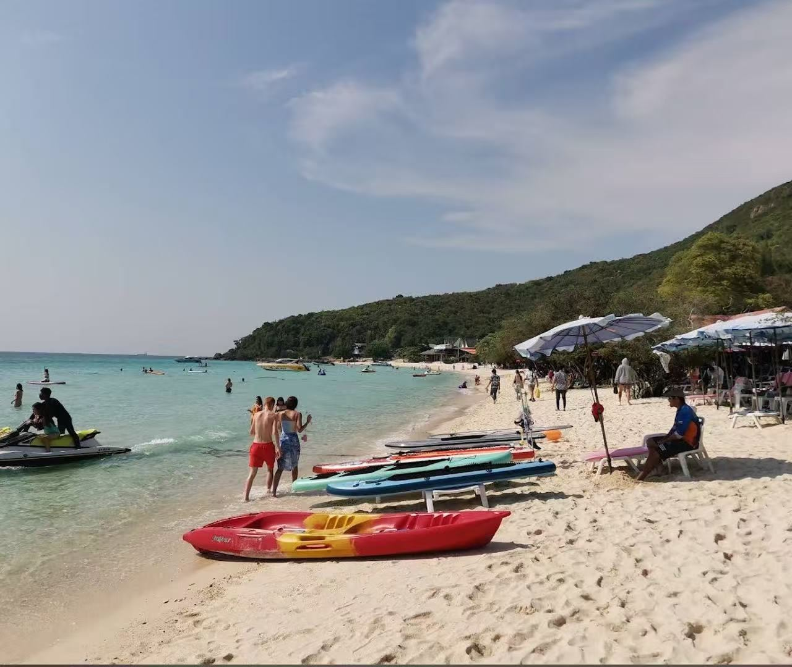
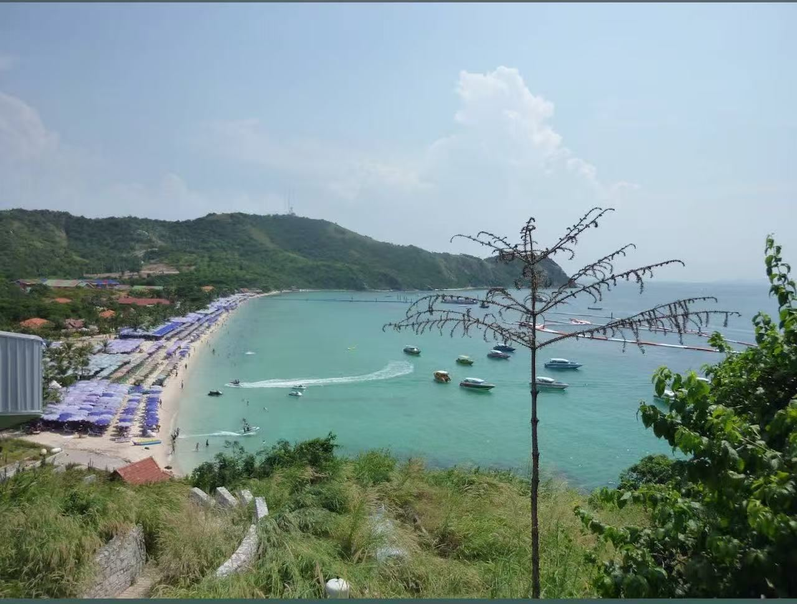
🕐 14:00-16:30 — Naul 沙滩躺平 + 玩摩托艇/香蕉船
✅ 实测：开车去 Naul 沙滩，租张椅子放下东西继续躺。强烈推荐在这里玩香蕉船和摩托艇——摩托艇一个人自己开，1200 泰铢能开 30 分钟（约 240 元，比国内性价比高很多），而且这片海滩比较远、海面上基本没人，随便开超级爽；香蕉船更便宜（没问价，应该不贵）。
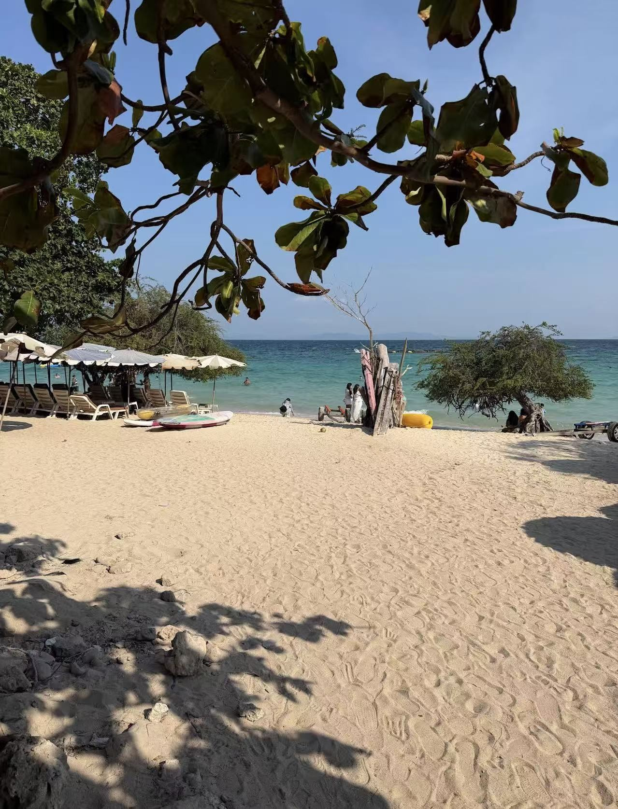
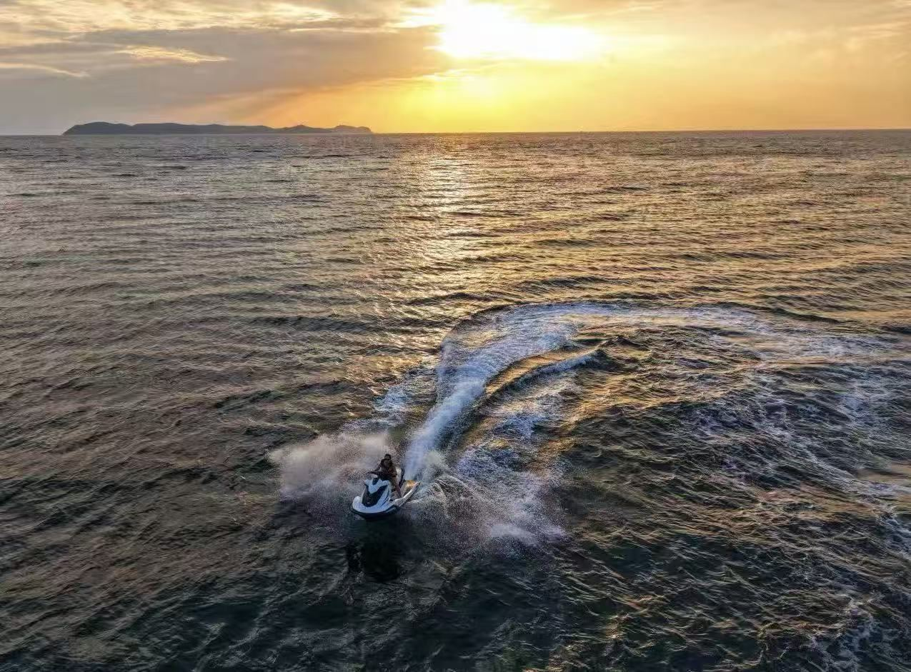
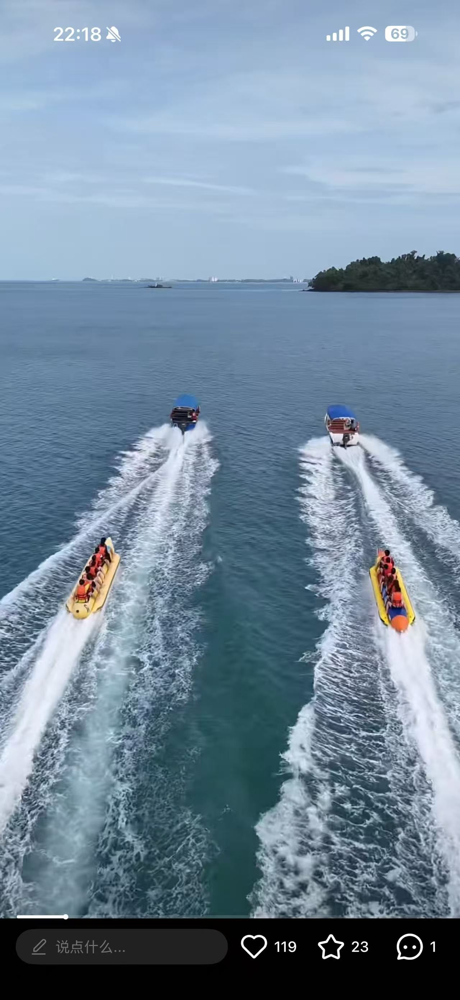
🕐 16:30 — 开车回 Tawaen 还摩托车，坐快艇返回
✅ 实测：差不多 16:30 开车回 Tawaen 还摩托，准备回酒店。回程建议体验快艇（约 150 泰铢票价，人满发船）——问清楚哪家快一点，可以坐船尾，差不多 5 点多能在海上看到日落。
🕐 17:30-18:30 — 回酒店冲澡 + 麦当劳晚餐
✅ 实测：回酒店洗完澡，出来去麦当劳吃——7-Eleven 吃太多也吃腻了，换换口味。
🕐 18:30-19:00 — 前往蒂芬妮剧场
Tiffany's Show 剧场在芭提雅二路（Second Road），紧邻 Terminal 21 航站楼商场，从步行街一带过去约 10-15 分钟（双条车/Grab）。
🕐 19:30-20:45 — Tiffany's Show 蒂芬妮秀
芭提雅最经典夜间表演，百老汇级别舞台灯光服装，华丽大秀无低俗感。推荐 19:30 场。门票 Klook 约 800 泰铢/人（约 160 元，VIP 200 元）。🎟️ 提前 1 天 Klook 订。
✅ 性价比提示：如果更看重性价比，可以选隔壁的 阿克烈秀（Alcazar 阿尔卡萨秀）——同为芭提雅两大经典人妖秀之一，舞台舞美同样华丽，票价通常比蒂芬妮便宜，预算敏感的朋友选它更划算。
🕐 20:45-23:00 — 散场 + 海滨放松
散场后从二路回海滨路一带，Pattaya Beer Garden（海滨露天酒吧，一瓶啤酒约 80-130 泰铢，离酒店很近）坐一晚吹海风，或者双条车再回步行街。今晚住得近，怎么都方便。
🕐 约 10:00 — 睡到自然醒 + 海滨散步
今天是泰国最后一个完整日子，不设闹钟。起床后沿海滨路慢悠悠散步，找家咖啡馆看海发呆。在海滨路租一排沙滩椅（约 50 泰铢/张），叫几个椰子（30 泰铢/个）和冰啤酒，开始躺平。

🕐 约 12:00-16:00 — 海滩 / 中天海滩（想呆多久呆多久）
懒得动就在酒店泳池泡一下午；想换沙滩就坐双条车去中天海滩（Jomtien Beach）——比市区人少水更干净。路边摊买个泰式炒粉 60 泰铢边走边吃。


🕐 下午可选（推荐）— 真理寺（Day4 没去的，今天补上）
如果 Day4 为了赶日落放弃了真理寺，今天下午是最好的补课时间（行程最松的一天才放得下）。从酒店 Grab 去北边 Naklua 约 15 分钟，门票 500 泰铢。全木雕海边神殿、整栋无一颗钉子、高 105 米面朝大海，人少时走一圈非常宁静。⚠️ 有小段施工区，按要求戴安全帽；建议 16:00-17:00 去，光最柔、也不晒。
🕐 17:30-20:00 — 兰坡海鲜市场 · 自购海鲜 + 找店加工（压轴大餐）
兰坡海鲜市场（Lan Pho Na Kluea Market / ตลาดลานโพธิ์นาเกลือ）是芭提雅最大、最热门的海鲜市场（Google 4.4 分/1.6 万评价），位于纳库鲁阿（Naklua），离 Holiday Inn 仅约 4 公里、驾车 11 分钟（走 Pattaya–Naklua 路，Grab 很方便）。玩法就是自己挑海鲜 → 拿到市场内/入口旁的加工店代煮，最新鲜也最划算。
① 先在摊位挑活海鲜：认准"活的"（虾会弹、蟹会动、贝类闭壳），明码标价按公斤称重。常见：濑尿虾/皮皮虾、老虎虾、花蟹/青蟹、生蚝、鱿鱼、花甲、石斑等。
② 买好后拿到加工店：市场入口左手边一整排都是加工店，多数老板会说简单中文，沟通口味很方便。
③ 先谈好加工费和做法再下锅：可指定白灼、清蒸、泰式辣炒、咖喱炒、炭烤、冬阴功煮、蒜香黄油等，不同海鲜配不同做法。
④ 坐等开吃：加工店一般就在市场边上，点几瓶冰啤酒或椰子，一桌海鲜配海风，就是最地道的吃法。
💰 加工费行情：按重量或做法计，通常 20–100 泰铢/公斤（有说约 100 泰铢/公斤），按做法/每道菜单项约 20–150 泰铢；一整桌丰富的海鲜总加工费大约 300 泰铢（约 60 元）。加上自购海鲜，三人一桌吃爽人均约 500–800 泰铢。
• 认准活海鲜：不新鲜/死的便宜也别买，容易被"调包"或吃坏肚子。
• 加工费必须提前问清：谈好是"按公斤"还是"按道菜"，避免结账翻倍；最好让老板写在纸上或复述确认。
• 盯秤：称重时留意是否去皮、数字是否归零，避免短斤缺两。
• 只挑明码标价的摊：没有标价的先问价，货比三家再买。
• 别理路边主动拉客的"黑店"：自己进市场挑，加工只选市场内/入口旁的正规加工摊。
• 小心市场门口会说中文、主动带你选货的人（实测）——他们往往带你去有回扣的摊，能全程自己来就自己来。
• 提前选好加工店（实测）：去市场前先在点评/攻略里看好想去的加工店，别到了再抓瞎，避免被拉去别的店。
• 想更省心：也可直接点加工店/市场内海鲜餐厅的成品套餐，但"自购+代加工"最便宜最新鲜。
⏰ 建议时段：下午去最好，海鲜最新鲜、选择最多；越晚好货越少、部分摊收工。市场白天营业（约清晨开市），你下午或傍晚到都行，但别拖到太晚。
🧾 参考必买：手臂粗的濑尿虾、活蹦乱跳的老虎虾、现开生蚝、花蟹/青蟹、鱿鱼。三人一桌摆满，自购+加工合计约 1,500–2,400 泰铢（人均 500–800）。
✅ 实测点单参考（三人一桌）：我们挑了 2 只大青龙 + 7 只大皮皮虾 + 3 只兰花蟹 + 1 条石斑鱼，量刚好三人吃爽。照着这个量点，不容易点多或不够吃。

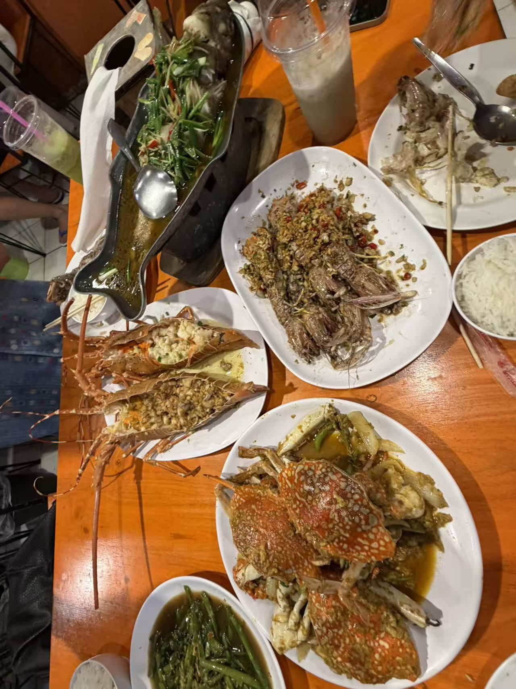
🕐 20:00-23:00 — 芭提雅最后一夜
芭提雅最后一个晚上，想怎么过就怎么过。想再战 Walking Street 把没去的吧端了；想找家海鲜排档喝到老板收摊；想在海滩路买两瓶啤酒坐沙滩吹风聊人生。今晚没有计划就是最好的计划。唯一提醒：明天中午要退房回曼谷，今晚别喝太晚。
🕐 10:00-11:00 — 自然醒 + 早餐 + 退房
最后一天睡到自然醒，出门吃早餐，11:00 前退房，行李全部带走，不要寄存在芭提雅（曼谷是单程，折返回来拿行李要 4 小时，不现实）。行李装车，人+行李一起回曼谷。
🕐 12:00-15:00 — 包车回曼谷（行李随车）
三人包一辆车直接回曼谷市中心（SUV/轿车约 1500-2500 泰铢/车，行李全程放车上，不再折返）。目的地导航到 CentralWorld / 原酒店 Grande Centre Point Ratchadamri 一带。找车方式同 Day4：Klook/KKday 提前订 或 Grab 现场叫。实测 3 点多到 CentralWorld。
🕐 15:00 — 到 CentralWorld，找 Airpotels 把行李直接运到机场
✅ 实测方案：到曼谷市中心后，直接把大箱子交给 Airpotels（行李运送/托运服务），让他们直接把行李运到素万那普机场——你们全程空手，不用拖着箱子逛街、看拳、赶车。
- 机场派送一般有固定取件时段（多在白天到前半夜），未必覆盖你 23:00 后到机场的时段。行李直接送机场的前提是：你到达机场的时间在它的服务时段内。
- ✅ 下单前务必问到三件事：① 是否支持「深夜/24 小时门店取件」？② 送到机场的具体柜台位置和取件截止时间？③ 万一飞机延误/你到得晚，怎么处理？
- 如果对方答不上或只服务到 20:00，就不要押这条方案：改用「行李寄存」（Siam/Chit Lom 商圈门店，但需自己折返取），或最稳的——干脆拖箱看完拳，直接去机场（拳馆到机场也就 40-60 分钟）。
- 怎么用：Airpotels 在泰国商场/商圈有服务点（CentralWorld 一带就有），App 或现场下单，按件计费，把行李托运到机场，你在约定时间到机场指定柜台领取，或机场送达。
- 优势：彻底解放双手，逛完、看完拳、吃完宵夜直接空手去机场，不用中途折返取行李，最省心。
- 建议提前订：提前在官网/Airpotels App/Klook下单，约好送机时间和领取点，避免现场满或临时约不到。
- 价格：按件计费，比折返芭提雅取行李省时省力太多（具体以官网实时价为准）。
⚠️ 兜底方案：若来不及用托运服务，也可用 Airporter 行李寄存（Siam/Chit Lom 商圈门店），但寄存还需自己折返取件，不如「直接运机场」省心。
🕐 15:30-17:30 — 市中心购物扫货 + 简单吃口饭
空手轻装开逛 CentralWorld / Siam Paragon / Big C——行李已经运去机场了，彻底不用拖着走。
🛍️ 伴手礼清单：青草膏、鼻通、泰丝、芒果干、榴莲干、欧莱雅（泰国全球最低价之一）、以及小老板海苔、Bento 鱿鱼丝、Koh-Kae 花生豆等泰国本土零食。Big C 是买伴手礼的性价比之王，什么都有还便宜。逛完简单吃口饭垫垫肚子，准备去看泰拳。
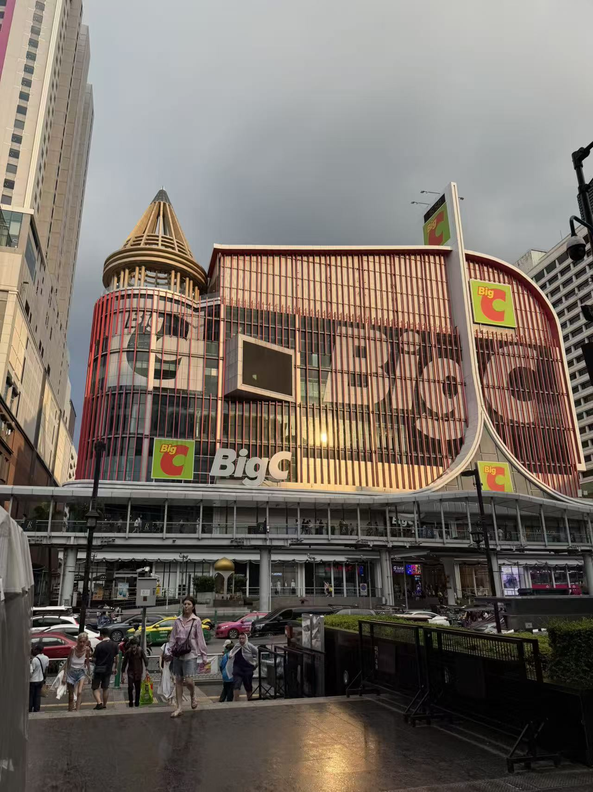
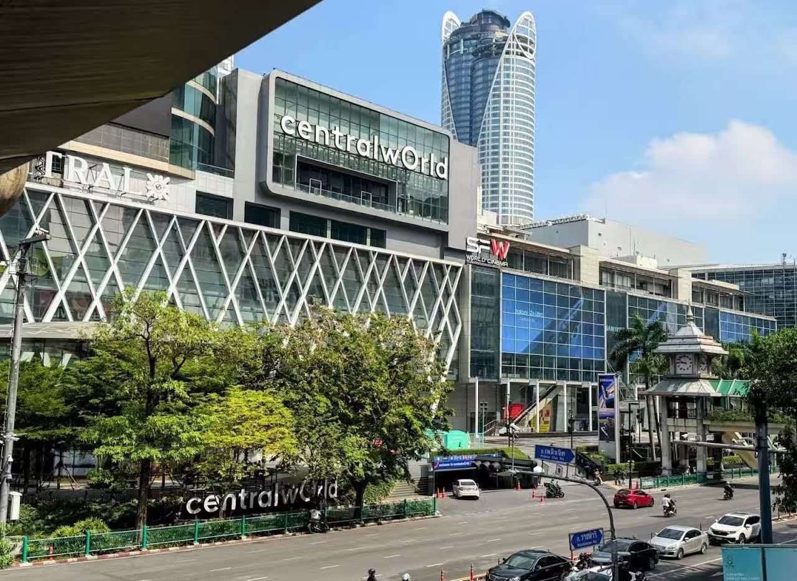
🕐 17:30 — 前往拳馆
Grab 前往 Rajadamnern Stadium 拉差达慕拳击场（周三场，近 Victory Monument）。门票建议 Klook 或官网提前订。
🕐 18:00-22:00 — 泰拳赛（周三 New Power 传统赛）
✅ 实测：我们 Day3 没订到票，就改到 7 号这天（周三）来看。周三 New Power 传统赛约 18:00 正式开打（17:00 左右入场），建议 21:30 前离场打车去机场——不用等打到散场。
- ⭐ 推荐：21:00-21:30 主赛结束就走——前 4-5 场是铺垫和新人赛，压轴主赛（约 20:00-21:30）才是精华。看完主赛提前 Grab 去机场，时间从容。
- 全程看完（约 23:00）也来得及：02:30 才起飞，22:30-23:00 离场打车、23:30-24:00 到机场，时间完全够——只要不打算逛免税店，值机 + 安检 + 退税都绰绰有余。
- 实在不想熬夜：放弃拳赛，18:30 直接从 CentralWorld 打车去机场，机场休息室睡一觉，反而更舒服。
- ⚠️ 拳馆里闷热 + 噪音大，别指望在里面休息，精力要留给之后 4 小时候机。
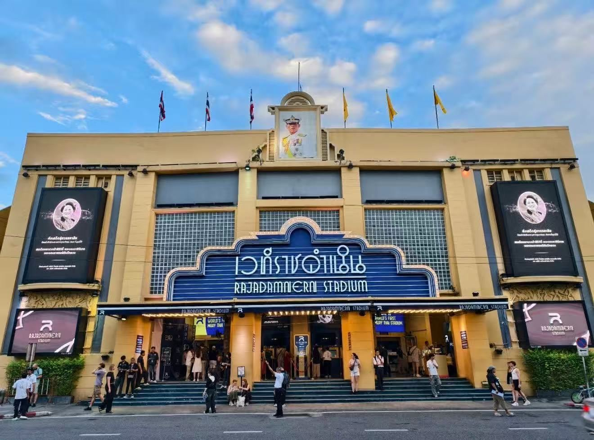
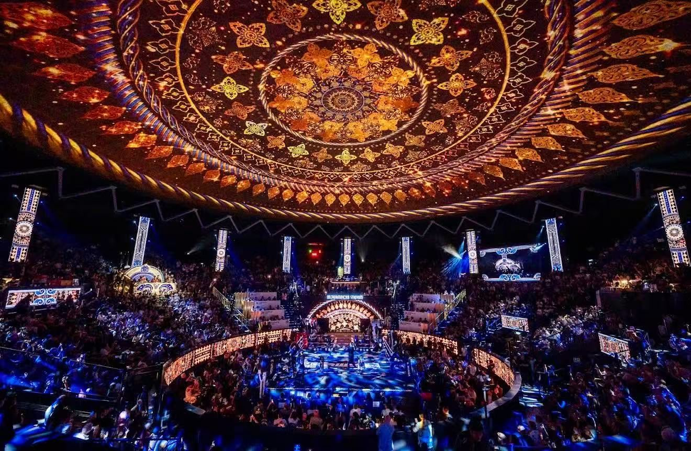
- 周六：RWS 世界系列赛 —— 最高规格，世界级制作 + 冠军战 + 免费啤酒，首选；约 18:00 开场
- 周一/周二/周五：Rajadamnern Knockout（RKO 淘汰赛） —— 主打 80% KO 率、快节奏；17:00 开场
- 周三（本行程）：New Power 传统赛 —— 约 18:00 开打，泰国最老牌推广方、高端拳手、最大合法赌局场面
- 周四：Petchyindee 传统赛 —— 本地人最爱、技术流；周日 Kiatpetch 传统赛
💡 基本规则：传统赛 5 回合 × 3 分钟；每回合 5 分制；拳手赛前跳 Wai Kru（拜师舞）配现场鼓乐。二楼有合法下注区，外国游客围观即可、不必参与。现场允许拍照录像，票价按座位档次浮动，热门场次建议官网/Klook 提前订。
⚠️ 各场次开场时间偶有调整，订票前以官网当周赛程为准。
🕐 21:30-23:00 — 打车去机场（两个选择）
① 看完主赛就走（约 21:30）：Grab 去素万那普机场（约 300-400 铢），到机场约 22:30，时间非常宽裕。
② 看完整场再走（约 23:00）：也完全来得及——02:30 才起飞，23:00 离场、24:00 前到机场，值机 + 安检 + 退税 1 个多小时绰绰有余。✅ 前提是不逛免税店（你不打算逛的话，就更没压力了）。
💡 两个时段都避开了市区晚高峰。唯一要注意：打车用 Grab 预约功能提前锁定，深夜拳馆外不好叫车。
🕐 23:00-01:30 — 机场：值机 → 安检 → 退税 →（可选）免税店
必做三步：① 托运行李、办值机 ② 过安检出境 ③ 办 VAT 退税（市区购物满 2000 泰铢，退税 7%，柜台在安检后海关处）。
💡 不逛免税店的话：这三步做完（约 24:00-00:30）就没事了，剩下的时间找个舒服座位休息、给手机充电、眯一会儿，等登机就行——时间很充裕，一点不用赶。
🛍️ 想逛的话：King Power 免税店就在安检后，可把没买齐的伴手礼补齐（也是消磨时间的好去处）。
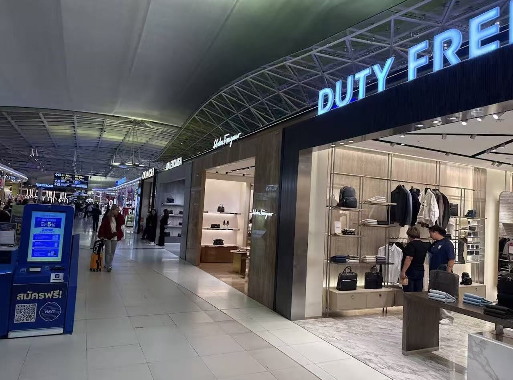
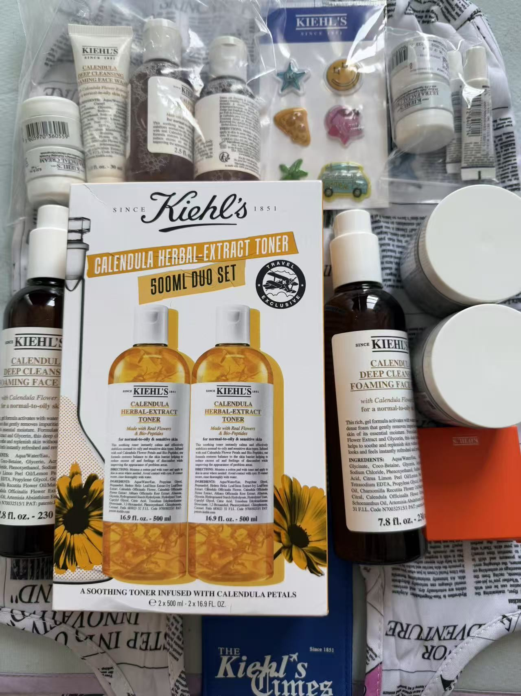
🕐 01:30-02:00 — 前往登机口候机
约 01:30 朝登机口走。红眼航班，登机口可能比较远，提前到。找个充电口把手机充满，刷会儿手机等登机。
🕐 02:30 — 起飞 ✈️
登机起飞，机上能睡就睡，约 4.5 小时。
🕐 08:10 — 落地上海浦东
落地上海（北京时间），泰国之旅圆满结束，满满的回忆和照片！